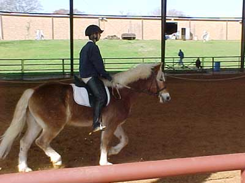
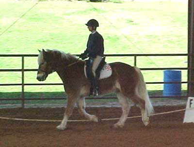
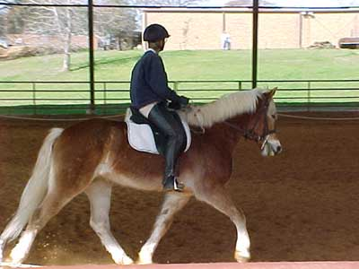
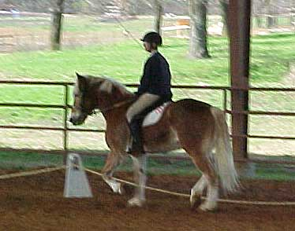
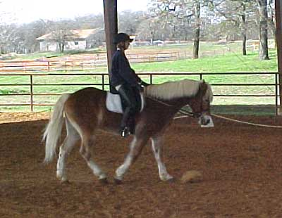
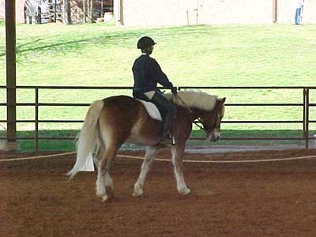
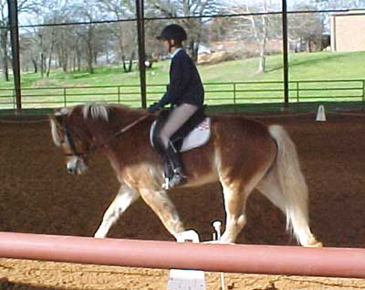
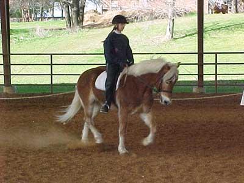
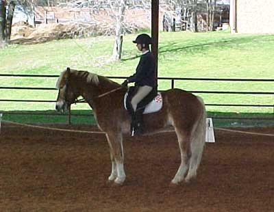

Adamir's First Dressage
Show
Judge's comments: Cute horse, willing to go forward. Work on getting
him steady (speedwise and headwise), and work on acceptance of the bit.
It's very possible that I could have left the reins longer and still
kept asking for his head, and not had so much resistance. Or, he could
have taken advantage of the extra rein and just trotted faster and ignored
the transitions. (all of which we got on the letter) My plan is to go back
to the lunge in side reins, and see how resistant he is with a nice length
of rein. I'd like to work through any resistance on the lunge, so that
when I get back on him, my hand is just there to support him, not to fight
with him...
I am hoping that the weather lets me get some more jumping training
in. At the show, which was a Combined Test, I led him over some of the
Elementary jumps, and he followed me over. He's so springy, that he should
like jumping the small stuff. (not like lazy horses that I've had who just
stumble over anything little)

I think this was how we typically
looked going around the ring, nose pushed out, trying to evade the bit
(but my heels are down...)

I need to pull my shoulders back and
lengthen the rein so he can stretch into the bit better (neither of which
I do well when I'm nervous)

He was nice enough to bend on the
circles

This is a nice frame, but something
we should be looking for probably 6 months to a year from now. Right now
I need to let him stretch forward much more - getting this frame now just
means I'm holding his mouth too much.

This is more like it, but we're doing
the loose rein across the diagonal. (shows how much I need to be giving
him more rein) So, the rest of the test I should have been riding with
reins this loose, and then given more for this part.

Like this...

He was forgiving enough to still stride
out nicely at the trot, which probaby helped my reins stay short, to have
a feeling of control - a lot more work, and learning to trust that I can
get the control when I need it, even without short reins

Well, we still make a cute picture

This would have been a much better
halt if it had been on the center line and not the quarter line. Outside
leg, outside leg, outside leg...